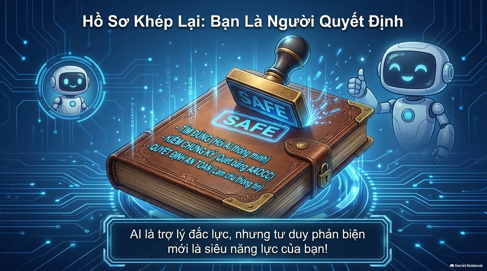
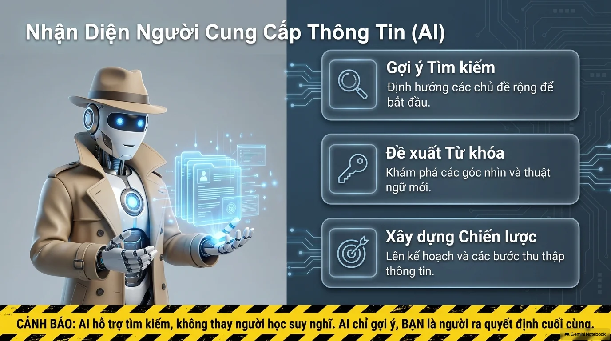

Hành Trình Trở Thành Thám Tử Kỹ Thuật Số
Hoàn thành lần lượt 4 chặng để nắm vững kỹ năng đánh giá thông tin và sử dụng Trí tuệ nhân tạo một cách an toàn, có trách nhiệm.
Chặng 1: Nền Tảng Đánh Giá
Khám phá lý do cần kiểm chứng thông tin, 5 nguyên tắc vàng (Chính xác, Cập nhật, Đầy đủ 4W+1H, Phù hợp, Nguồn uy tín) và bảng Fast-Check 30 giây.
Chặng 2: Luật & Sở Hữu Trí Tuệ
Phân biệt Bằng sáng chế (Patent), Bí mật thương mại (Trade Secret), Thương hiệu (Trademark), Bản quyền (Copyright) và quy tắc Sử dụng hợp lý (Fair Use).
Chặng 3: Trí Tuệ Nhân Tạo (AI)
Học công thức viết Prompt chuẩn 4 thành phần, hiểu rõ hiện tượng AI bịa đặt nguồn (Hallucination) và sử dụng bộ 5 trạm kiểm định AAOCC.
Chặng 4: Thực Chiến & Thi Thử
Thực hành khám nghiệm 3 hồ sơ vụ án tin tức trên mạng, sau đó chinh phục 15 câu hỏi trắc nghiệm IC3 GS6 để nhận Chứng chỉ Thám tử Số.

Bài 13: Các Nguyên Tắc Đánh Giá Thông Tin
Vì Sao Học Sinh Cần Đánh Giá Thông Tin?
Internet chứa hàng triệu tin tức mỗi ngày. Không kiểm chứng dễ dẫn đến hậu quả nghiêm trọng!
• Bẫy tin giả & lừa đảo: Tin giật gân, sai sự thật tràn ngập mạng xã hội gây hoang mang, làm hiểu sai kiến thức khoa học.
• Học tập an toàn & chính xác: Chọn lọc thông tin chuẩn giúp hoàn thành bài tập tốt và mở rộng hiểu biết đáng tin cậy.
5 Nguyên Tắc Đánh Giá Cốt Lõi
Hãy luôn kiểm tra 5 tiêu chí này trước khi tin tưởng hoặc trích dẫn bất kỳ nội dung nào:
Tính Chính Xác
Thông tin phải phản ánh đúng sự thật khách quan, có bằng chứng, số liệu rõ ràng; không thêu dệt hay cắt ghép.
Tính Cập Nhật
Thông tin phải mới nhất, còn giá trị sử dụng ở hiện tại. Kiểm tra ngày xuất bản hoặc lần chỉnh sửa gần nhất.
Tính Đầy Đủ (4W + 1H)
Chứa đủ các chi tiết cốt lõi: Who (Ai), What (Gì), Where (Ở đâu), When (Khi nào), How (Như thế nào). Tránh tin mập mờ.
Tính Phù Hợp
Nội dung đúng nhu cầu bài học, vừa sức hiểu với lứa tuổi học sinh, không quá sơ sài cũng không quá phức tạp.
Nguồn Uy Tín
Xuất phát từ tác giả có chuyên môn, giáo viên, cơ quan nghiên cứu hoặc trang web chính thống.
🧪 Thí Nghiệm Tương Tác: Thước Đo 4W + 1H
Bấm chọn từng mảnh ghép bên dưới để xem một tin nhắn mập mờ biến đổi thành một thông báo chuẩn xác, tin cậy:
Checklist Kiểm Tra Nhanh Fast-Check (30 Giây)
Khi bắt gặp một bài viết bất kỳ trên mạng xã hội hoặc internet, hãy trả lời nhanh 4 câu hỏi này:
| Bước | Câu hỏi tự đặt ra | Mẹo nhận biết nhanh |
|---|---|---|
| Bước 1 | AI VIẾT? Ai là tác giả? Trang web nào đăng? |
Ưu tiên trang chính thống có tên miền .edu.vn, .gov.vn hoặc các cơ quan báo chí lớn được cấp phép. |
| Bước 2 | CÓ ĐÚNG? Có bằng chứng, số liệu cụ thể không? |
Thử tìm kiếm chéo xem các trang thông tin lớn khác có đưa tin tương tự không. |
| Bước 3 | CÓ MỚI? Bài viết được đăng khi nào? |
Xem mốc thời gian xuất bản ở đầu hoặc cuối bài viết. Tránh đọc tin từ nhiều năm trước bị đào lại. |
| Bước 4 | MỤC ĐÍCH? Chia sẻ kiến thức hay giật gân câu view? |
Thận trọng cao độ với các tít giật gân như "Sốc", "Chia sẻ gấp", "Bí mật bị giấu kín"... |
⚖️ Chuyên Đề Mở Rộng IC3: Bảo Hộ Sở Hữu Trí Tuệ & Sử Dụng Hợp Lý
Theo chuẩn IC3 GS6 Level 3, học sinh cần phân biệt rõ các loại quyền sở hữu trí tuệ và hành vi vi phạm:
💡 Bằng sáng chế (Patent)
Bảo hộ phát minh, sáng chế kỹ thuật mới. Vi phạm: Sử dụng hoặc bán phát minh mà không được sự đồng ý của người nắm giữ văn bằng bảo hộ.
🤫 Bí mật thương mại (Trade Secret)
Bảo vệ bí quyết kinh doanh mật. Chiếm đoạt (Misappropriation): Trộm cắp thông tin vì mục đích kinh tế hoặc làm lợi cho thế lực bên ngoài.
🏷️ Thương hiệu (Trademark)
Bảo vệ Logo, khẩu hiệu, biểu tượng sản phẩm. Vi phạm: Sử dụng Logo hoặc tên tương tự gây nhầm lẫn với doanh nghiệp khác.
📖 Bản quyền (Copyright) & Fair Use
Bảo hộ tác phẩm nghệ thuật, phim ảnh, âm nhạc. Sử dụng hợp lý (Fair Use): Được phép trích ảnh tĩnh, đoạn ngắn để đánh giá, bình luận học tập trực tuyến.
Bài 14: AI Hỗ Trợ Tìm Kiếm Thông Tin An Toàn
Sổ Tay Thám Tử Kỹ Thuật Số
Trí tuệ nhân tạo (AI) như ChatGPT, Gemini, Copilot là người trợ lý đắc lực cho việc tra cứu thông tin. Tuy nhiên, AI không thay người học suy nghĩ. AI chỉ gợi ý, bạn là người ra quyết định cuối cùng!
Nguyên Tắc Bất Di Bất Dịch:
AI hỗ trợ tìm kiếm, nhưng tư duy phản biện mới là siêu năng lực của bạn!

1. Gợi Ý Tìm Kiếm
Định hướng các chủ đề rộng để bắt đầu mở rộng manh mối điều tra.
2. Đề Xuất Từ Khóa
Khám phá các góc nhìn mới, thuật ngữ chuyên ngành chuẩn xác.
3. Xây Dựng Chiến Lược
Lên kế hoạch và các bước logic để thu thập thông tin bài tập.
🛠️ Công Thức Lấy Lời Khai: Viết Prompt Hiệu Quả
Prompt càng rõ ràng, manh mối thu về từ AI càng hữu ích và chính xác. Hãy hoàn thiện 4 thành phần:
CÂU PROMPT TỔNG HỢP THEO CHUẨN THÁM TỬ:
🕳️ Lỗ Hổng Của AI: Hiện Tượng Bịa Đặt Nguồn (AI Hallucination)
AI hoạt động theo cơ chế xác suất ngôn ngữ, vì vậy nó có hai nhược điểm chết người mà học sinh cần biết:
Vấn đề 1: Tự tin nhưng sai sự thật
AI có thể trả lời cực kỳ lưu loát, dùng câu từ vô cùng thuyết phục nhưng nội dung bên trong lại hoàn toàn sai lệch.
Vấn đề 2: Bịa đặt các đường link & tác giả
AI có thể tự 'sáng tác' ra tên sách, tên viện nghiên cứu hoặc đường link web trông rất hợp lý nhưng thực tế link đó bấm vào bị lỗi 404 (không tồn tại).
Nhận Diện Hồ Sơ Nguồn Tin Thật vs Nguồn Bịa Đặt
✅ Nguồn Thật & Đáng Tin Cậy
Ví dụ: Tổ chức Y tế Thế giới (who.int), Bộ Y tế (moh.gov.vn), Bộ GD&ĐT (moet.gov.vn).
- Đuôi tên miền uy tín (.gov, .edu, .int, .org).
- Có ghi rõ ngày cập nhật bài viết gần nhất.
- Có đội ngũ tác giả, chuyên gia chịu trách nhiệm pháp lý.
❌ Nguồn Bịa Đặt & Thiếu Uy Tín
Ví dụ: abc123xyz.edu.vn (không tồn tại), HealthyNews123.com.
- Bấm vào link báo lỗi "Không tìm thấy trang" (Error 404).
- Tên miền lạ lẫm, miễn phí (.xyz, .tk, .cc), không tổ chức bảo trợ.
- Không tìm thấy tên tác giả trong các tài liệu khoa học chính thức.
⛔ 3 "Vụ Án" Tuyệt Đối Cảnh Giác Cao Độ (Vùng Đỏ)
Đối với 3 lĩnh vực rủi ro cao sau đây, tuyệt đối không chỉ dựa vào AI mà bắt buộc phải xác thực chéo bằng nguồn chính thống:
Sức Khỏe & Y Tế
Triệu chứng bệnh, đơn thuốc, phương pháp điều trị. Sai sót có thể nguy hiểm đến tính mạng!
Pháp Luật & Quy Định
Điều luật, mức xử phạt, quy chế thi cử, thủ tục hành chính. AI thường nhầm lẫn luật các nước.
Tài Chính & Tiền Bạc
Đầu tư, giao dịch ngân hàng, chuyển tiền. Rất dễ dính bẫy lừa đảo công nghệ cao!
🔬 Bộ Công Cụ AAOCC: Khám Nghiệm Thông Tin (5 Trạm Kiểm Định)
Hãy đặt 5 câu hỏi này để quét xem câu trả lời của AI hoặc thông tin trên mạng có đủ an toàn để sử dụng hay không:
Quy Tắc Đèn Đỏ Của Thám Tử:
Nếu bất kỳ trạm nào trong 5 trạm AAOCC báo "Đèn đỏ" (còn nghi ngờ), BẮT BUỘC phải đối chiếu lại với nguồn chính thống trước khi sử dụng!
Quy Trình Tác Nghiệp 3 Bước
Hiểu rõ câu trả lời và bóc tách chính xác những điều AI đang khẳng định.
Sử dụng bộ công cụ AAOCC. Đối chiếu sự thật AI nêu ra với nguồn uy tín.
Chỉ sử dụng thông tin khi ĐÃ tự tay kiểm tra và thấy hoàn toàn phù hợp.
Hồ Sơ Vụ Án: Vạch Trần Tin Giả & AI Bịa Đặt
Hãy vào vai Thám tử Kỹ thuật số, đọc kỹ lời khai và bằng chứng của từng vụ án, sau đó mở báo cáo khám nghiệm AAOCC để kết luận!